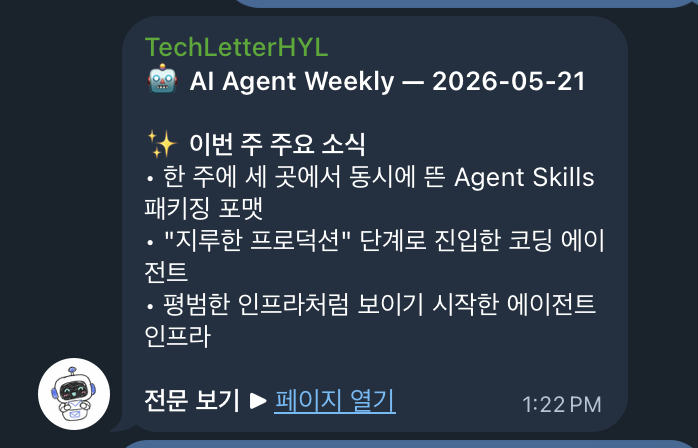
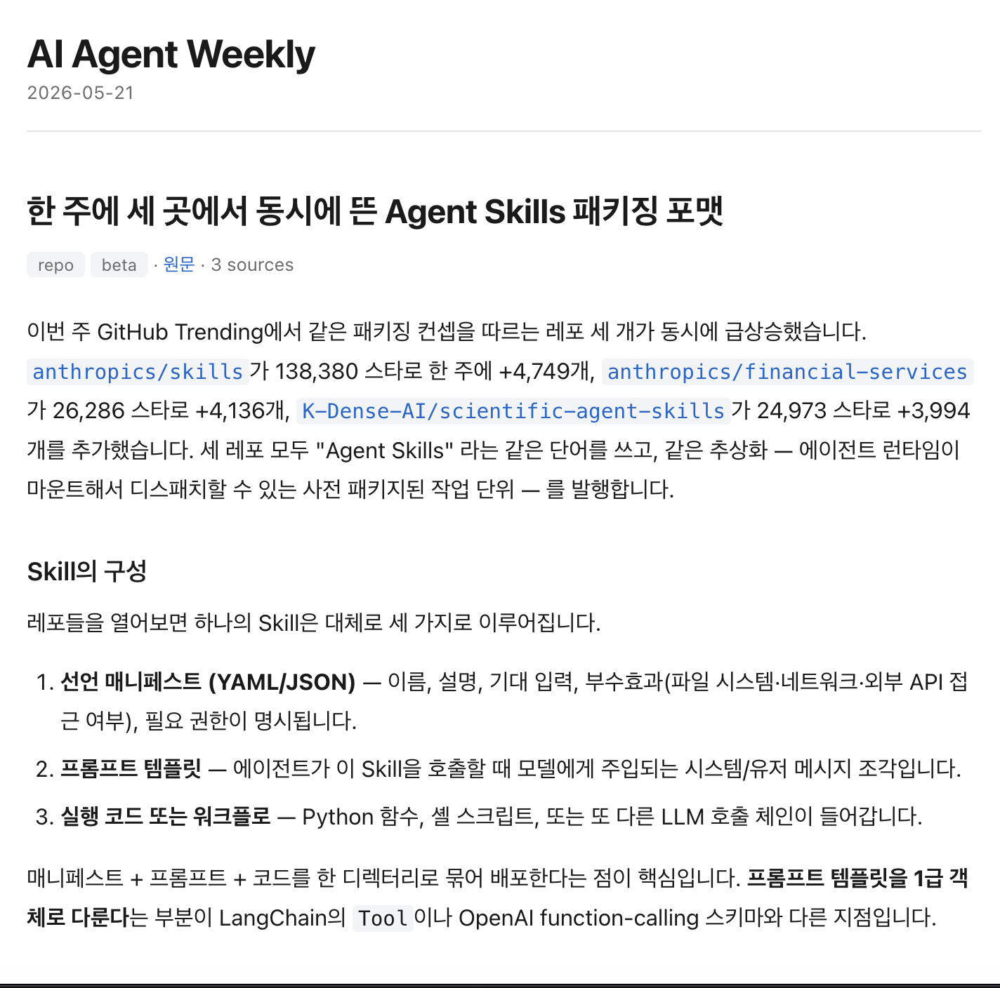
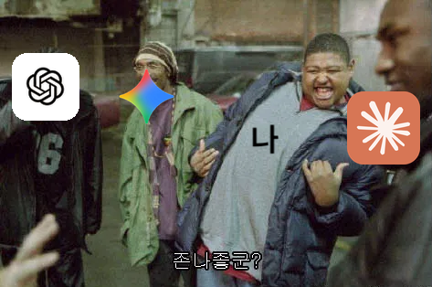

Self Introduction
하나를 파고들면서,
낯선 문제에도 부딪히는 엔지니어
이미지에서 공간을 읽는 AI를 만들어왔고,
더 다양한 문제를 해결하며 함께 성장해가고 싶습니다.
01 · Career
경력 소개
두 회사를 거치며 이미지에서 3D 공간의 정보를 이해하는 일을 해왔습니다.
2D 이미지는 3D에서 한 차원이 소실된 결과물이라 복원이 어렵고, 그러한 문제를 풀어오고 있습니다.
02 · Agent Experience
Agent를 도구 삼아, 일하는 방식을 바꾸는 중
직접 만들고 써보면서, 여러 일을 agent에게 맡기기 시작했습니다.
AI 개발 효율성
간단한 MLOps — dagster
AI 개발의 experiments를 자동화, 효율화 하는 MLOps 툴을 제작하였습니다.
필요한 기능과 실험에 맞춰 틀을 구성하고, 내부 데이터 및 모델을 쉽게 이식할 수 있도록 설계했습니다.

동향 큐레이션
AI Agent Weekly
매주 AI agent 관련 동향을 모아 정리해 보내주는 테크레터를 작성 및 배포하고 있습니다.


만들어 쓰는 경험이 쌓일수록, 다음에 위임할 수 있는 범위도 함께 넓어지고 있습니다.
03 · Interests
AI로 풀어가는 문제는 여전히 넓습니다
LLM agent가 가장 각광받고 있지만,
AI의 영역은 더 넓고 데이터로 문제를 풀어가야 하는 자리는 계속 남아 있습니다.
"For me, the best use case of AI was to improve human health and accelerate scientific discovery..."
ROBOTICS
Physical AI
BIOLOGY
AlphaFold
EARTH
날씨 예측
3D Vision
2D 이미지로부터 3D 공간을 이해하는 기술.
두 회사를 거치며 계속 이 문제를 다뤄왔고, 가장 깊이 있게 파고 싶은 영역입니다.
Spatial VLM
공간 정보를 이해하는 Vision-Language Model.
3D Vision과 LLM이 만나는 접점에서 새로운 가능성을 탐색하고 있습니다.
관심 있는 분야의 모델을 개발하면서, agent를 탐구하고 활용해 더 나은 AI 기술을 만들어가고 싶습니다.
04 · Side Project
회사 밖에서도 다양한 분야를 겪어보려 합니다
한 영역에 머무르지 않고, AI를 적용할 수 있는 범위를 넓혀가려 합니다.
Social Impact
카카오
Tech for Impact
이동약자의 이동을 돕는 기술을 함께 고민하고 만들어보는 프로그램에 참여했습니다.
Study
MLLM 스터디
멀티모달 LLM의 최신 연구를 함께 읽고, 본인 도메인에 어떻게 적용할 수 있을지 토의했습니다.
AI for Science
AI for Safer Drug
NTD 관련 신약 개발에 AI 예측 모델을 적용하는 프로젝트에 참여했습니다.
05 · Closing
이곳에서 회사와 함께 성장하고 변화를 만들어가는 엔지니어가 되고 싶습니다.
